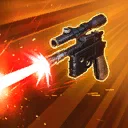
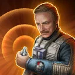

General Merrick
A dedicated Rebel pilot who provides tactical support to allied forces while leading from the front lines
A dedicated Rebel pilot who provides tactical support to allied forces while leading from the front lines

Deal Physical damage to target enemy. If this attack scores a critical hit, allied Rebels gain 5% Turn Meter, then Expose target enemy for 1 turn at the end of the turn.
Omicron Boost : While in Territory Battles: If this attack scores a critical hit, increase General Merrick's Critical Damage by 25% (stacking) until end of battle and inflict Protection Disruption on target enemy for 1 turn.
Characters defeated by this ability can't be revived. If this damage defeats a character, allied Rebel Fighters gain 50% Turn Meter.
If Mon Mothma is the ally in the Leader slot, General Merrick's out of turn attacks are not impacted by her assist penalty.

Deal Physical damage to all enemies.
This ability gains additional effects based on the number of stacks of Air Superiority on General Merrick:
- 1+ Stack: Allied Rebel Fighters gain Offense Up for 2 turns
- 2+ Stacks: Allied Rebel Fighters gain 25% Turn Meter
- 3+ Stacks: Allied Rebel Fighters gain Speed Up for 2 turns
- 4+ Stacks: Allied Rebel Fighters gain 25% Turn Meter
- 5 Stacks: Deal two additional instances of damage to all enemies, which can't be countered
General Merrick starts each encounter with one stack of Air Superiority which can't be copied, dispelled, or prevented. Whenever General Merrick is Rallied, he gains a stack of Air Superiority (max 5) until the end of the encounter, and the cooldown of Squadron Tactics is reset. Allied Rebel Fighters have 10% Offense and Potency for each stack of Air Superiority on General Merrick. These bonuses are doubled when attacking out of turn. When an ally damages an enemy with Expose on their turn, they recover 10% Health and Protection.
Air Superiority: +25% Accuracy and Critical Chance